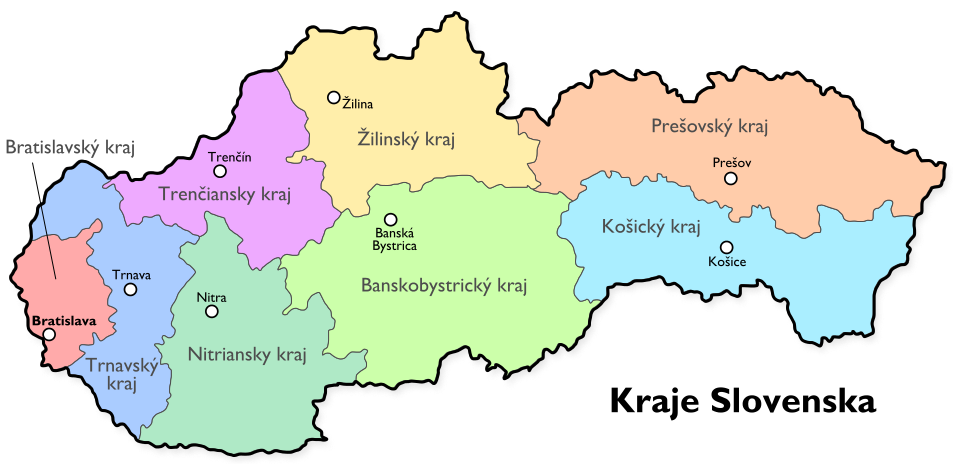

Умови вступу до ВНЗ Словаччини

Для того, щоб поступити до вищих навчальних закладів Словаччини, перш за все потрібно зареєструвати в обраному університеті офіційну заяву про вступ. Реєстрація офіційної заяви про вступ – процедура платна та коштує орієнтовно від 50 до 80 євро. Розмір оплати за реєстрацію заяви кожен факультет встановлює самостійно. Зазвичай заяву про вступ на бакалаврат потрібно зареєструвати до кінця лютого, а на магістратуру – до кінця квітня. Бувають і виключення: дещо зміщена по термінах реєстрація заяв про вступ до вищих навчальних закладів культури. Точну інформацію про терміни реєстрації заяв кожен факультет розміщує на своєму сайті щорічно. Окрім реєстрації заяви про вступ до університету також потрібно нострифікувати документи про освіту (атестат, диплом, додатки до них) в міністерстві освіти Словаччини. Попередньо на документи про освіту потрібно поставити апостиль міністерства освіти України, після чого на території Словаччини перекласти на словацьку мову та завірити у державного присяжного перекладача.
Кожен факультет кожного словацького університету щорічно розміщує на своєму сайті інформацію про умови вступу, зазвичай в грудні, найпізніше в січні-місяці. На деякі факультети словацьких державних університетів можна поступити взагалі без вступних іспитів, лише на підставі закінчення акредитованих підготовчих курсів. Деякі факультети державних ВНЗ приймають рішення «бути вступним іспитам чи ні» на основі кількості зареєстрованих заяв, а деякі факультети зараховують студентів лише на конкурсній основі на підставі вступних іспитів. У більшості випадків вступні іспити представляють собою тести на комп’ютері. Кожен тест – це ціла низка запитань (від 60 до 120) з 3-4 варіантами відповідей. Потрібно лише на протязі обмеженого часу (40-60 хвилин) поставити галочки напроти правильних відповідей. Зазвичай за 2 місяці до вступу кожен факультет, який передбачає вступні іспити, видає книгу по кожній дисципліні з переліком питань, з яких будуть складатись тести. Деякі факультети словацьких державних університетів для іноземних студентів додатково призначають усну співбесіду, в ході якої визначають рівень знання словацької мови, а деякі вимагають від іноземців сертифікат державного зразка про закінчення акредитованих міністерством освіти Словаччини підготовчих курсів. Як правило, абітурієнти, які навчаються на підготовчих курсах, реєструють декілька заяв про вступ, одну з яких на факультет без вступних іспитів, тим самим створюючи для себе запасний 100% варіант.